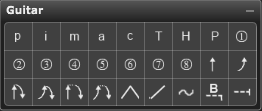

The following describes each of the tools in the Guitar palette:
The finger markings and string numbers suggest the finger or string used to play the notes to which they are applied. The vibrato marking pops up to allow selection of symbols to denote other effects related to vibrato.
String Bend Markings
You can enter string bend markings into the score without needing to associate them with a note. Each bend marking includes a bend range number signifying the number of half steps the note is bent. Alt[Cmd]-drag the number to alter it within the allowable bend range of -3 to 3 steps. The default bend is 1/2 step and the resolution is within 1/4 steps.
When you enter a bend marking, dragging to the right extends the area in which the marking pertains. Select a bend marking by dragging a rectangle around it with the arrow cursor, or position the cursor over the marking until you see the drag cursor.
Edit the shape of the bend by dragging the edit handles. You can move selected bend markings using the arrow keys. Position the mouse over the left end of the bend until you see the move cursor and Alt[Cmd]-drag to move the bend marking. You can move the bend range number independently of the bend marking by positioning the cursor over the number until you see the drag cursor and dragging the number.
To summarize the bend markings:
Slide and Vibrato
Barre at Fret Number
Enter the barre at fret number symbol by selecting it in the Guitar palette and clicking in the Score View.
Double-clicking the barre at fret number symbol in the Score View (not in the Guitar palette) opens the Barre Settings dialog box.
Use the Barre Settings dialog box to create bar at fret number symbols similar to the one shown below
The Barre Settings dialog box has numerous elements, as follows:
Type
These radio buttons represent different conventions for showing barre and fret positions. The three barre settings options in the Type section represent different notation conventions. Showing the B, C, or no letter differentiates the options in the Type section; the 1/2 is an example of the Amount (number of strings barred),and II is an example of the fret number referenced. You can edit the actual barre Amount and fret numbers are editable in the Score View, as described below.
Show
Barre markings that are extended over time appear with a line that can be Solid, Dashed, or Dotted.
Selecting the Brackets option ends the line with a downward pointing bracket. Alt[Cmd]-dragging the bracket end in the Score View toggles Brackets on and off. If you deselect Brackets, the line still appears with its selected attribute but with no ending bracket.
Amount
The barre symbol can reference the following groups of strings:
Changing the Fret or Amount
Alt[Cmd]-dragging the barre at fret mark horizontally changes the fret. It does not change the Amount setting.
Alt[Cmd]-dragging (the barre at fret mark vertically changes the Amount setting. It does not change the fret number.
The direction Alt[Cmd]-dragged constrains which function you are editing. This eliminates inadvertent changes to either setting. For example, Alt[Cmd]-dragging first in a vertical direction changes only the Amount setting, even if you also drag horizontally.